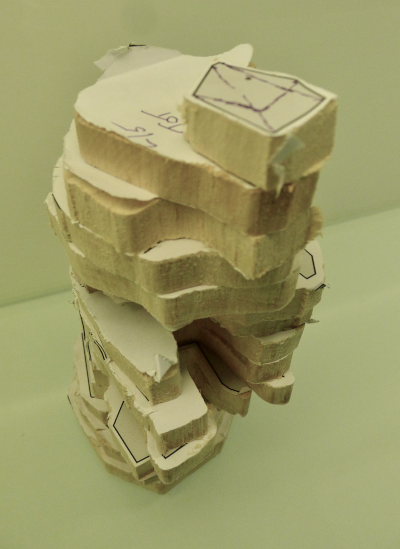
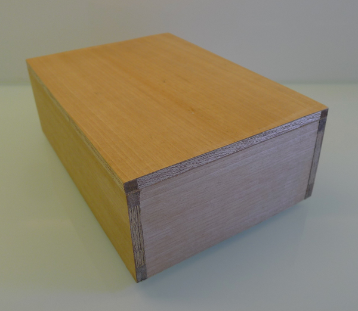
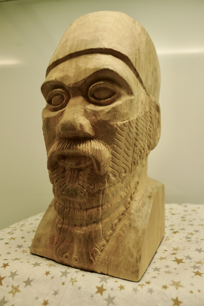
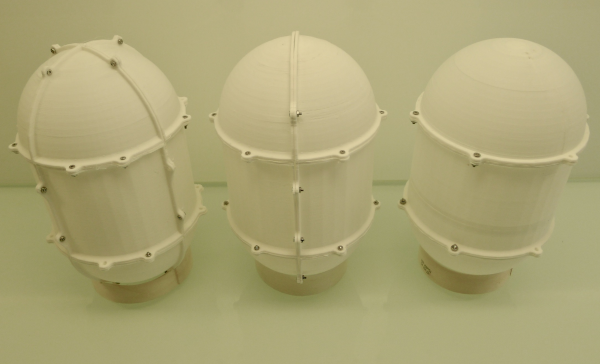
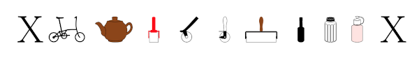

A Cubist Rodin’s The Thinker in Lime
Sixteen layers of basswood, from 24x3x1/2 inch plank. February 2025.

A Veneered Box
A bit of a struggle with this. I need to try another. Completed January 2025.

Bertie
Basswood(Lime) original block 200x100x100mm. Completed Dec. 2024.

Capsules
These were an experiment in thin walls, one filament thick where possible, minimal support material, and a stab at a flange/lug library in OpenSCAD. Right hand side, hemispheres and cylinder, middle, four quadrants of a sphere and two halves of cylinder, and left, eight octants of a sphere, and four quarters of a cylinder. About 200mm tall, screws M2. Dec. 2025.

MoreTikzsymbols
The image below (a png) shows my tikzsymbols (see CTAN), sadly blurred by conversion. When I have designed a few more I should publish them properly. These symbols can also be converted to individual SVGs, here is Small Wheel Bike, , (smb) with better resolution. The symbols are really at home in pdf’s where they appear with sharp lines. Apart from smb we have the essential brown betty teapot with the rest intended as Linocut/Etching symbols. The Soy Sauce (used to degreasing etching plates) bottle, the sugar shaker (dilute ammonia to degrease plates, or holding white or methylated spirit to clean grounds and varnishes), and the pink bottle (Soft Etch resist). Oct. 2024.
